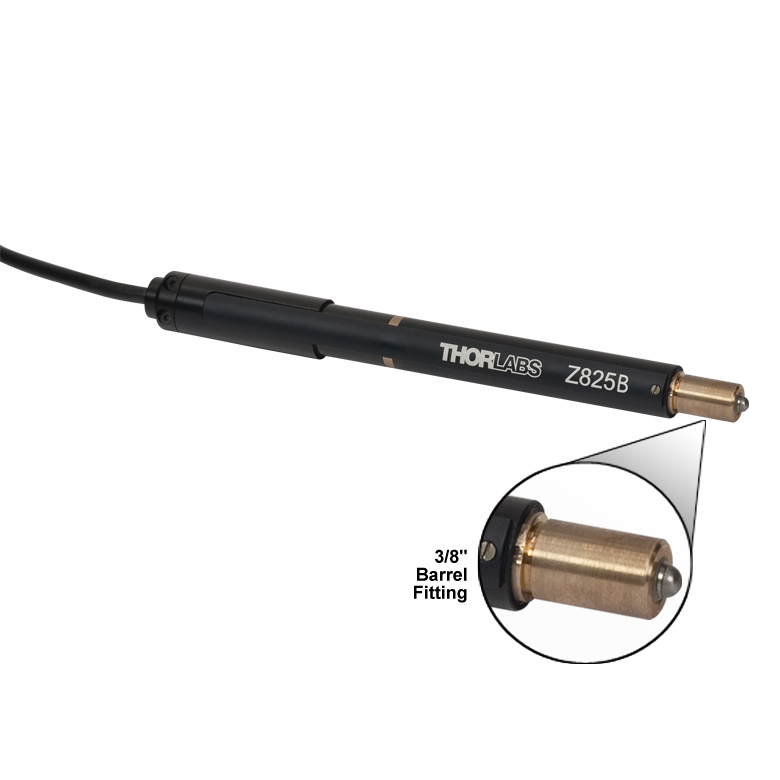
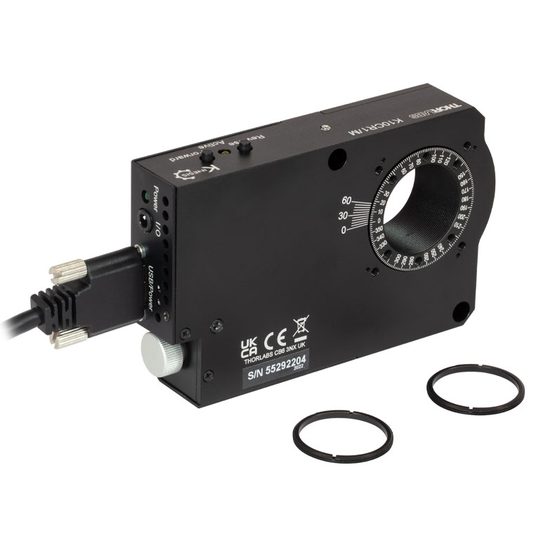

KDC101

Controller Description
The KDC101 is a compact single-channel K-Cube controller from Thorlabs designed for precise control of DC motors. It is optimized for positioning applications requiring accurate and smooth motion control. The KDC101 supports bidirectional DC motor control with adjustable speed, acceleration, and position settings. It features USB connectivity for computer control via Thorlabs’ Kinesis Software or QuantumION's Thorlabs Cube Repository.
Controller Use-Cases
- KDC101 is used in applications requiring fine motorized adjustments, such as:
- Optical Alignment: Precise positioning of lenses, mirrors, and other optical components.
- Microscopy: Fine control of motorized stages for specimen alignment or focusing.
- Laser Systems: Stabilizing or adjusting optical components in beam paths.
Peripherals Examples
- DC Motor Actuators 
- Motorized Mirror Mounts 
- Motorized Stages
API Reference
Bases: Tdc
KDC101 K-Cube Brushed DC Servo Motor Controller class
Source code in venv/lib/python3.9/site-packages/thorlabs_cube/driver/kcube/kdc.py
7 8 9 10 11 12 13 14 15 16 17 18 19 20 21 22 23 24 25 26 27 28 29 30 31 32 33 34 35 36 37 38 39 40 41 42 43 44 45 46 47 48 49 50 51 52 53 54 55 56 57 58 59 60 61 62 63 64 65 66 67 68 69 70 71 72 73 74 75 76 77 78 79 80 81 82 83 84 85 86 87 88 89 90 91 92 93 94 95 96 97 98 99 100 101 102 103 104 105 106 107 108 109 110 111 112 113 114 115 116 117 118 119 120 121 122 123 124 125 126 127 128 129 130 131 132 133 134 135 136 137 138 139 140 141 142 143 144 145 146 147 148 149 150 151 152 153 154 155 156 157 158 159 160 161 162 163 164 165 166 167 168 169 170 171 172 173 174 175 176 177 178 179 180 181 182 183 184 185 186 187 188 189 190 191 192 193 194 195 196 197 198 199 200 201 202 203 204 205 206 207 208 209 210 211 212 213 214 215 216 217 218 219 220 221 222 223 224 225 226 227 228 229 230 231 232 233 234 235 236 237 238 239 240 241 242 243 244 245 246 247 248 249 250 251 252 253 254 255 256 257 258 259 260 261 262 263 264 265 266 267 268 269 270 271 272 273 274 275 276 277 278 279 280 281 282 283 284 285 286 287 288 289 290 291 292 293 294 295 296 297 298 299 300 301 302 303 304 305 306 307 308 309 310 311 312 313 314 315 316 317 318 319 320 321 322 323 324 325 326 327 328 329 330 331 332 333 334 335 336 337 338 339 340 341 342 343 344 345 346 347 348 349 350 351 352 353 354 355 356 357 358 359 360 361 362 363 364 365 366 367 368 369 370 371 372 373 374 375 376 377 378 379 | |
get_digital_outputs_config()
async
Get digital output pin values on the motor control output port.
Not required for the KDC101. Unimplemented.
Source code in venv/lib/python3.9/site-packages/thorlabs_cube/driver/kcube/kdc.py
47 48 49 50 51 52 | |
get_mmi_parameters()
async
Get the operating parameters of the top panel wheel (Joystick).
:return: A 9 int tuple containing in this order: joystick mode,
maximum velocity, maximum acceleration, direction, position1,
position2, brightness, timeout, and dim. Cf.
:py:meth:set_mmi_parameters() <Kdc.set_mmi_parameters>
for description.
:rtype: A 9 int tuple
Source code in venv/lib/python3.9/site-packages/thorlabs_cube/driver/kcube/kdc.py
147 148 149 150 151 152 153 154 155 156 157 158 159 160 161 162 163 164 | |
get_position_trigger_parameters()
async
Get the positioning trigger parameters.
:return: An 8 int tuple containing in this order: start_position_fwd,
interval_fwd, num_pulses_fwd, start_position_rev,
interval_rev, num_pulses_rev, pulse_width, num_cycles. Cf.
:py:meth:set_position_trigger_parameters()
<Kdc.set_position_trigger_parameters> for description.
:rtype: An 8 int tuple
Source code in venv/lib/python3.9/site-packages/thorlabs_cube/driver/kcube/kdc.py
362 363 364 365 366 367 368 369 370 371 372 373 374 375 376 377 378 379 | |
get_trigger_io_config()
async
Get trigger input/output parameters.
:return: A 4 int tuple containing in this order: mode1, polarity1,
mode2, polarity2. Cf.
:py:meth:get_trigger_io_config()<Kdc.get_trigger_io_config>
for description.
:rtype: A 4 int tuple
Source code in venv/lib/python3.9/site-packages/thorlabs_cube/driver/kcube/kdc.py
262 263 264 265 266 267 268 269 270 271 272 273 274 275 276 | |
handle_message(msg)
async
Parse messages from the device. Minor adaptation from TDC001 method.
Source code in venv/lib/python3.9/site-packages/thorlabs_cube/driver/kcube/kdc.py
12 13 14 15 16 17 18 19 20 21 22 23 24 25 26 27 28 29 30 31 32 33 34 35 36 37 38 | |
set_digital_outputs_config()
async
Set digital output pins on the motor control output port.
Not required for the KDC101. Unimplemented.
Source code in venv/lib/python3.9/site-packages/thorlabs_cube/driver/kcube/kdc.py
40 41 42 43 44 45 | |
set_mmi_parameters(mode, max_velocity, max_acceleration, direction, position1, position2, brightness, timeout, dim)
async
Set the operating parameters of the top panel wheel (Joystick).
:param mode: This parameter specifies the operating mode of the wheel/joy stick as follows:
* 1: Velocity Control Mode - Deflecting the wheel starts
a move with the velocity proportional to
the deflection. The maximum velocity (i.e. velocity
corresponding to the full deflection of the
joystick wheel) and acceleration are specified in the
max_velocity and max_acceleration parameters.
* 2: Jog Mode - Deflecting the wheel initiates a jog move,
using the parameters specified by the set_jog
step_size and max_velocity methods. Keeping the wheel
deflected repeats the move automatically after the
current move has completed.
* 3: Go To Position Mode - Deflecting the wheel starts a
move from the current position to one of the two
predefined “teach” positions. The teach positions are
specified in number of steps from the home position
in the position1 and position parameters.
:param max_velocity: The maximum velocity of a move initiated by the top panel velocity wheel. :param max_acceleration: The maximum acceleration of a move initiated by the top panel velocity wheel. :param direction: This parameter specifies the direction of a move initiated by the velocity wheel as follows:
* 0: Wheel initiated moves are disabled. Wheel used
for menuing only.
* 1: Upwards rotation of the wheel results in a
positive motion (i.e. increased position count).
The following option applies only when the mode
is set to Velocity Control Mode (1). If set to
Jog Mode (2) or Go to Position Mode (3),
the following option is ignored.
* 2: Upwards rotation of the wheel results in a
negative motion (i.e. decreased position count).
:param position1: The preset position 1 when operating in go to position mode, measured in position steps from the home position. :param position2: The preset position 2 when operating in go to position mode, measured in position steps from the home position. :param brightness: In certain applications, it may be necessary to adjust the brightness of the LED display on the top of the unit. The brightness is set as a value from 0 (Off) to 100 (brightest). The display can be turned off completely by entering a setting of zero, however, pressing the MENU button on the top panel will temporarily illuminate the display at its lowest brightness setting to allow adjustments. When the display returns to its default position display mode, it will turn off again. :param timeout: 'Burn In' of the display can occur if it remains static for a long time. To prevent this, the display is automatically dimmed after the time interval specified in the timeout parameter has elapsed. Set in minutes in the range 0 (never dimmed) to 480. The dim level is set in the dim parameter below. :param dim: The dim level, as a value from 0 (Off) to 10 (brightest) but is also limited by the brightness parameter.
Source code in venv/lib/python3.9/site-packages/thorlabs_cube/driver/kcube/kdc.py
54 55 56 57 58 59 60 61 62 63 64 65 66 67 68 69 70 71 72 73 74 75 76 77 78 79 80 81 82 83 84 85 86 87 88 89 90 91 92 93 94 95 96 97 98 99 100 101 102 103 104 105 106 107 108 109 110 111 112 113 114 115 116 117 118 119 120 121 122 123 124 125 126 127 128 129 130 131 132 133 134 135 136 137 138 139 140 141 142 143 144 145 | |
set_position_trigger_parameters(start_position_fwd, interval_fwd, num_pulses_fwd, start_position_rev, interval_rev, num_pulses_rev, pulse_width, num_cycles)
async
Set positioning trigger parameters.
The K-Cube motor controllers have two bidirectional trigger ports
(TRIG1 and TRIG2) that can be set to be used as input or output
triggers. This method sets operating parameters used when the
triggering mode is set to a trigger out position steps mode by calling
the ;py:meth:set_trigger_io_config()<Kdc.set_trigger_io_config>
method. As soon as position triggering is selected on either of the
TRIG ports, the port will assert the inactive logic state. As the stage
moves in its travel range and the actual position matches the position
set in the start_position_fwd parameter, the TRIG port will output its
active logic state. The active state will be output for the length of
time specified by the pulse_width parameter, then return to its
inactive state and schedule the next position trigger point at the
start_position_fwd value plus the value set in the interval_fwd
parameter. Thus when this second position is reached, the TRIG output
will be asserted to its active state again. The sequence is repeated
the number of times set in the num_pulses_fwd parameter. When the
number of pulses set in the num_pulses_fwd parameter has been
generated, the trigger engine will schedule the next position to occur
at the position specified in the start_position_rev parameter. The same
sequence as the forward direction is now repeated in reverse, except
that the interval_rev and num_pulses_rev parameters apply. When the
number of pulses has been output, the entire forward-reverse sequence
will repeat the number of times specified by num_cycles parameter. This
means that the total number of pulses output will be num_cycles x
(num_pulses_fwd + num_pulses_rev).
Once the total number of output pulses have been generated, the trigger output will remain inactive.
When a unidirectional sequence is selected, only the forward or reverse part of the sequence will be activated.
:param start_position_fwd: When moving forward, this is the stage position [in position counts - encoder counts or microsteps] to start the triggering sequence. :param interval_fwd: When moving forward, this is the interval [in position counts - encoder counts or microsteps] at which to output the trigger pulses. :param num_pulses_fwd: Number of output pulses during a forward move. :param start_position_rev: When moving backwards, this is the stage position [in position counts - encoder counts or microsteps] to start the triggering sequence. :param interval_rev: When moving backwards, this is the interval [in position counts - encoder counts or microsteps] at which to output the trigger pulses. :param num_pulses_rev: Number of output pulses during a backwards move. :param pulse_width: Trigger output pulse width (from 1 µs to 1000000 µs). :param num_cycles: Number of forward/reverse move cycles.
Source code in venv/lib/python3.9/site-packages/thorlabs_cube/driver/kcube/kdc.py
278 279 280 281 282 283 284 285 286 287 288 289 290 291 292 293 294 295 296 297 298 299 300 301 302 303 304 305 306 307 308 309 310 311 312 313 314 315 316 317 318 319 320 321 322 323 324 325 326 327 328 329 330 331 332 333 334 335 336 337 338 339 340 341 342 343 344 345 346 347 348 349 350 351 352 353 354 355 356 357 358 359 360 | |
set_trigger_io_config(mode1, polarity1, mode2, polarity2)
async
Set trigger intput/output parameters.
The K-Cube motor controllers have two bidirectional trigger ports (TRIG1 and TRIG2) that can be used to read an external logic signal or output a logic level to control external equipment. Either of them can be independently configured as an input or an output and the active logic state can be selected High or Low to suit the requirements of the application. Electrically the ports output 5 Volt logic signals and are designed to be driven from a 5 Volt logic. When the port is used in the input mode, the logic levels are TTL compatible, i.e. a voltage level less than 0.8 Volt will be recognised as a logic LOW and a level greater than 2.4 Volt as a logic HIGH. The input contains a weak pull-up, so the state of the input with nothing connected will default to a logic HIGH. The weak pull-up feature allows a passive device, such as a mechanical switch to be connected directly to the input. When the port is used as an output it provides a push-pull drive of 5 Volts, with the maximum current limited to approximately 8 mA. The current limit prevents damage when the output is accidentally shorted to ground or driven to the opposite logic state by external circuity.
Warning: do not drive the TRIG ports from any voltage source that can produce an output in excess of the normal 0 to 5 Volt logic level range. In any case the voltage at the TRIG ports must be limited to -0.25 to +5.25 Volts.
Input Trigger Modes
When configured as an input, the TRIG ports can be used as a general purpose digital input, or for triggering a relative, absolute or home move as follows:
- 0x00: The trigger IO is disabled
- 0x01: General purpose logic input (read through status bits using the
:py:meth:
get_status_bits() <thorlabs_cube.driver.tcube.tdc.Tdc.get_status_bits>method) - 0x02: Input trigger for relative move
- 0x03: Input trigger for absolute move
- 0x04: Input trigger for home move
When used for triggering a move, the port is edge sensitive. In other words, it has to see a transition from the inactive to the active logic state (Low->High or High->Low) for the trigger input to be recognized. For the same reason a sustained logic level will not trigger repeated moves. The trigger input has to return to its inactive state first in order to start the next trigger.
Output Trigger Modes
When configured as an output, the TRIG ports can be used as a general purpose digital output, or to indicate motion status or to produce a trigger pulse at configurable positions as follows:
- 0x0A: General purpose logic output (set using the
:py:meth:
set_digital_outputs_config() <Kdc.set_digital_outputs_config>method). - 0x0B: Trigger output active (level) when motor 'in motion'. The output trigger goes high (5V) or low (0V) (as set in the polarity1 and polarity2 parameters) when the stage is in motion.
- 0x0C: Trigger output active (level) when motor at 'maximum velocity'.
- 0x0D: Trigger output active (pulsed) at pre-defined positions moving
forward (set using start_position_fwd,
interval_fwd, num_pulses_fwd and pulse_width parameters in the
:py:meth:
set_position_trigger_parameters() <Kdc.set_position_trigger_parameters>message). Only one Trigger port at a time can be set to this mode. - 0x0E: Trigger output active (pulsed) at pre-defined positions moving
backwards (set using start_position_rev, interval_rev,
num_pulses_rev and pulse_width parameters in the
:py:meth:
set_position_trigger_parameters() <Kdc.set_position_trigger_parameters>message). Only one Trigger port at a time can be set to this mode. - 0x0F: Trigger output active (pulsed) at pre-defined positions moving forwards and backward. Only one Trigger port at a time can be set to this mode.
:param mode1: TRIG1 operating mode :param polarity1: The active state of TRIG1 (i.e. logic high or logic low) :param mode2: TRIG2 operating mode :param polarity2: The active state of TRIG2 (i.e. logic high or logic low)
Source code in venv/lib/python3.9/site-packages/thorlabs_cube/driver/kcube/kdc.py
166 167 168 169 170 171 172 173 174 175 176 177 178 179 180 181 182 183 184 185 186 187 188 189 190 191 192 193 194 195 196 197 198 199 200 201 202 203 204 205 206 207 208 209 210 211 212 213 214 215 216 217 218 219 220 221 222 223 224 225 226 227 228 229 230 231 232 233 234 235 236 237 238 239 240 241 242 243 244 245 246 247 248 249 250 251 252 253 254 255 256 257 258 259 260 | |